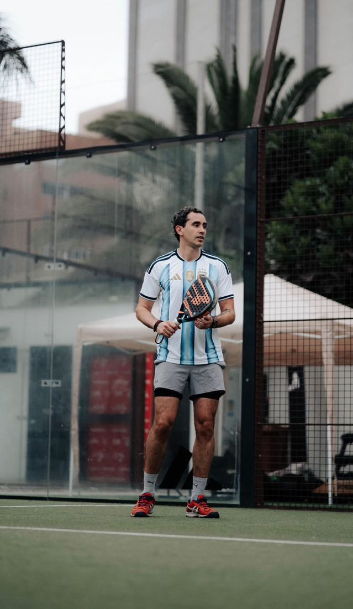
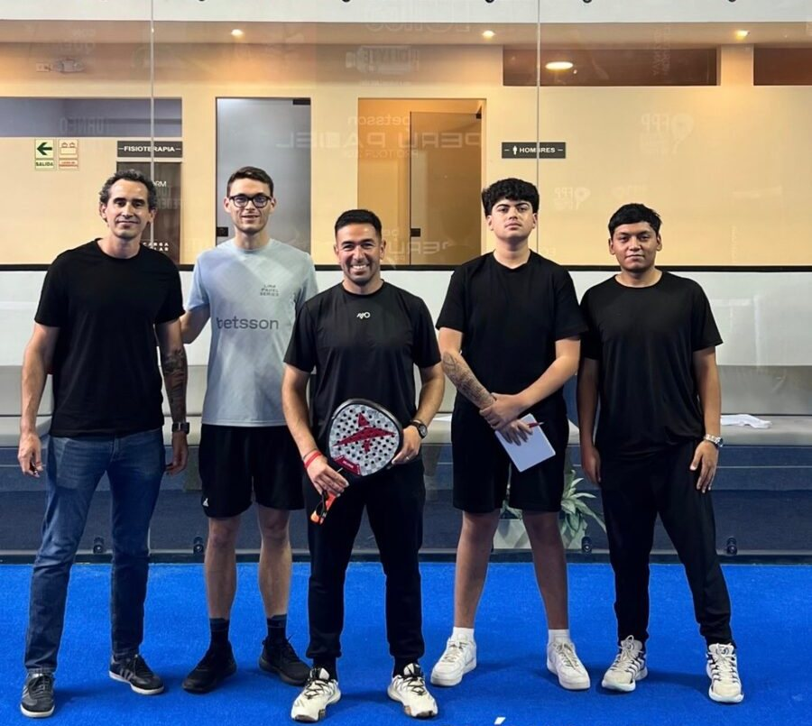

Quién enseña
Soy Gabriel Pizarro, profesor de pádel en Lima
Jugué mucho pádel en mi adolescencia y lo seguí jugando de grande: nunca lo dejé. Hoy enseño en grupos pequeños, para que cada alumno se vaya de la clase con algo de valor.

Mi recorrido
- Jugué mucho pádel en mi adolescencia y lo seguí jugando de grande.
- Hice el Curso de Entrenador de Pádel (Alta Competencia y Etapas Formativas) en Academia de Pádel, Argentina. Ahí confirmé algo que ya sospechaba: enseñar me gusta tanto como jugar.
- Participé en la Clínica de Arbitraje de la Federación Peruana de Pádel. Por eso, además de las clases, armé una herramienta de arbitraje gratuita para la comunidad.
Cómo enseño
- Grupos pequeños, de 1 a 4 alumnos por clase, con foco en la corrección individual de la técnica.
- 3 niveles de progresión, con objetivos claros en cada etapa.
- Un ambiente donde equivocarse forma parte de aprender, sin presión de torneo.
Con quién trabajo
- Adolescentes que recién empiezan y adultos que buscan actividad física, socialización y bienestar.
- Programa Junior, de 8 a 15 años.
- Mi terreno es la iniciación y la consolidación de nivel; no compito con clubes de alto rendimiento.
Por qué doy clases
Para mí el pádel es un hobby que me permite conocer gente y, sobre todo, dejarles algo. Esa es mi motivación detrás de academiadepadel.pe: no es llenar pistas, es que cada alumno se vaya de cada clase con algo de valor.
